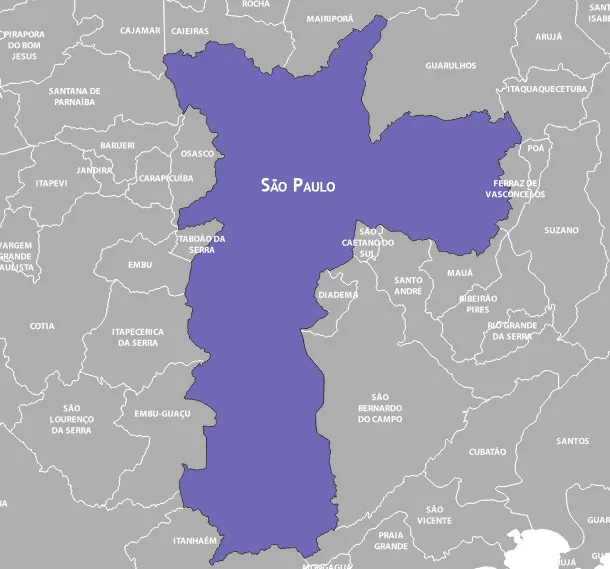
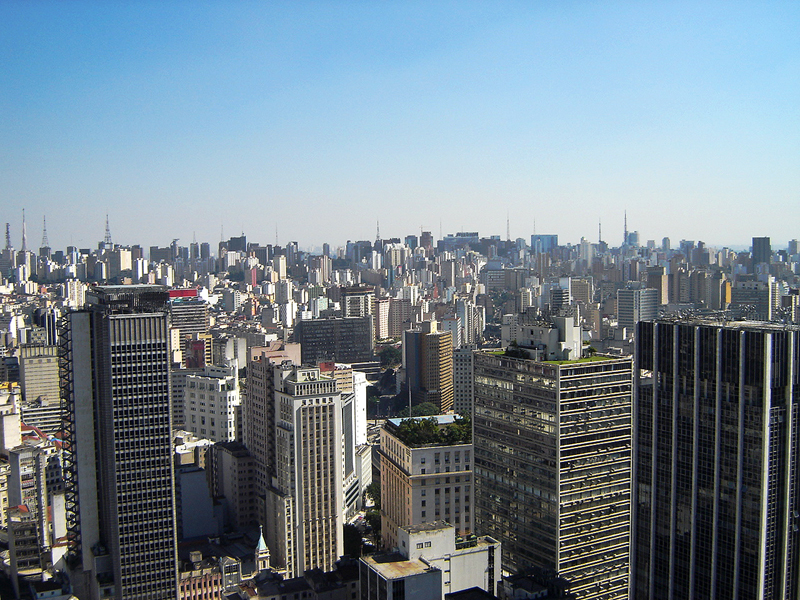
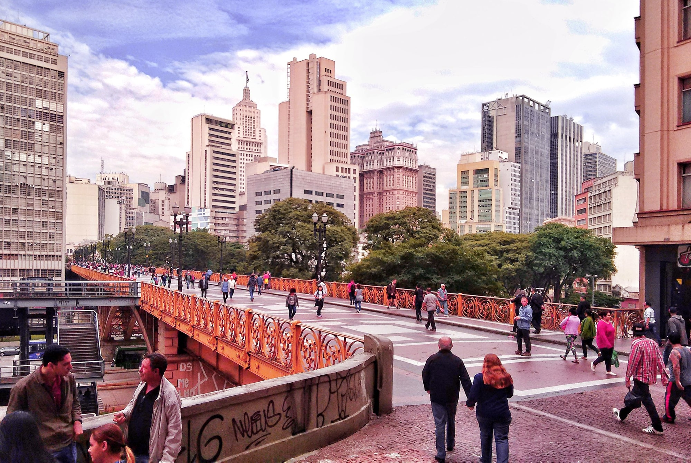

São Paulo
A cidade de São Paulo é a capital do estado de mesmo nome e sede da Região Metropolitana de São Paulo. A capital paulista possui 12 milhões de habitantes, sendo a mais populosa do Brasil. Está inserida no bioma Mata Atlântica, tendo clima predominantemente Subtropical Úmido. O tempo, entretanto, pode sofrer bruscas variações durante o dia. O município é considerado uma cidade global em função do seu dinamismo econômico e dos serviços de que dispõe, sobretudo no que diz respeito às redes de transporte e de comunicação. São Paulo apresenta, entretanto, muitos desafios estruturais característicos de grandes metrópoles.
História da cidade de São PauloA fundação da cidade de São Paulo aconteceu no local conhecido como Pátio do Colégio, no dia 25 de janeiro de 1554. A edificação foi construída pela missão jesuítica liderada pelos padres José de Anchieta e Manuel da Nóbrega, com a intenção de catequizar as populações indígenas que viviam na região.
A cidade foi, aos poucos, ganhando centralidade econômica e política na região e tornou-se capital da província em 1815. A intensificação dos fluxos de migrantes e do desenvolvimento econômico de São Paulo aconteceu, principalmente, durante o ciclo do café. O avanço da industrialização, juntamente do fenômeno da urbanização, foi consolidando o papel da cidade na economia regional e nacional, chegando, atualmente, à classificação de cidade global.
Mapa da cidade de São Paulo Geografia e Demografia da cidade de São Paulo
A cidade de São Paulo possui 12.325.232 habitantes, constituindo a cidade mais povoada do Brasil. Considerando-se os dados do último censo, a densidade demográfica do município é de 7.398,26 hab/km², o que o coloca em primeiro lugar entre os mais povoados. A taxa de crescimento populacional tem diminuído com o passar dos anos, e na última década (2010-2019) registrou um valor de 0,55%.
Atualmente a população de São Paulo concentra-se na faixa dos 20 aos 49 anos e vem passando por um processo gradual de envelhecimento. As porções centrais do município concentram maior número de idosos. A expectativa de vida média na cidade é de 70,1 anos. No entanto, o valor varia de distrito para distrito. Nas áreas de periferia, a expectativa de vida ao nascer é menor do que em bairros centrais ou bairros nobres, diferença que pode ser de até 23 anos.
A capital paulista recebe anualmente muitos migrantes de outros estados do Brasil e do mundo. Os principais fluxos internacionais são oriundos de Portugal, Bolívia, Japão, China e Itália. O município recebe também pessoas vindas da Venezuela, do Haiti e de países da África, como Angola, Nigéria e Senegal.
Economia da cidade de São Paulo
O PIB da cidade de São Paulo para 2018 foi de R$ 714.683.362,46 (IBGE), o que correspondia a 10,2% do PIB brasileiro. A maior parcela desse valor (74,08%) é formada pelas atividades do setor terciário, seguido da indústria (8,12%) e, por fim, com menor participação (0,005%), da agropecuária. No contexto mundial, São Paulo é a 21ª economia, e a 3ª maior da América Latina.
O município destaca-se no setor financeiro, abrigando as sedes de alguns dos principais bancos nacionais e internacionais bem como de grandes indústrias, que vão desde o setor de tecnologia, de comunicação, até montadoras de veículos e empresas do agronegócio mundial. No geral, 63% das empresas internacionais com filial no Brasil concentram-se em São Paulo. Em função disso, o município é considerado um importante centro financeiro do país.
Por conta da sua estrutura econômica e da densa rede de transportes e de serviços que garantem a conexão com diversas partes do mundo, São Paulo é um grande atrativo para investimentos internacionais, ficando atrás apenas de centros como Nova York, Hong Kong, Londres e Xangai.
O comércio e o setor varejista desempenham um importante papel na economia do município, liderando as atividades do setor terciário. Além disso, a capital paulista é um dos principais destinos turísticos no país, e foi considerada o segundo mais desejado do mundo em 2020. O turismo constitui, então, uma grande fonte de receitas para o município.
